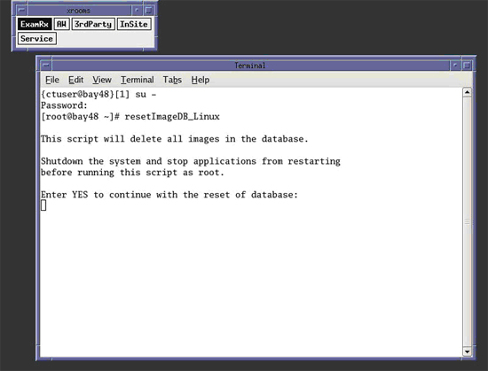
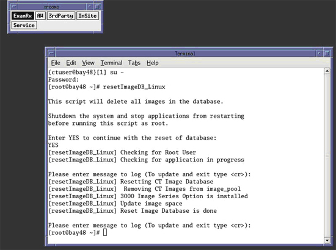

Operating Documentation
Direction 5193574-800, Rev# 22
LightSpeed 7.X Service Methods
Module Version 1.0, Version Date 9/29/08
Operating Documentation |
| Required Persons | Preliminary Reqs | Procedure | Finalization |
|---|---|---|---|
| 1 |
The follow procedure describes and illustrates the Host Computer Image Database Reset procedure commonly referred to as “resetImageDB_Linux” script. It is important to follow the steps listed below in order.
This script shall only be used as a last resort to clear corrupted data (images or database structure). All Image data stored on the Image Disk will be deleted and the Hard Disk Drive re-partitioned!
| Last Revised: | 19 September 2008 |
| Condition | Reference | Effectivity |
|---|---|---|
Host Computer hardware must be in good working order, including the Image Hard Disk Drive. | - | - |
Only trained service personnel should service the GE CT Scanner. | - | - |
Reboot the Operator Console.
If Applications are running, reboot system by clicking the Shutdown ICON on the desktop and select the restart option. Or
Open a Terminal Window using the Toolchest.
Type: {ctuser@hostname} reboot[ENTER]
Just after the Operating System finishes loading and before Applications start, Click [Cancel] in the Application Startup Window to stop the Application from loading.
| NOTE: | Application cannot be running when performing this procedure. |
Open a Terminal Window using the Toolchest.
Type: {ctuser@hostname} su -[ENTER]
Type the root password and press [ENTER]
Launch the Host Computer Image Database Reset utility.
Type: [root@hostname] resetImageDB_Linux[ENTER]
The Terminal Window will update, warning the User that all images stored in the Image Database on the Host Computer will be deleted. User is prompted to type “YES” to continue with the reset of database, or abort the script by either closing the Terminal Window or by pressing [ENTER].
Illustration 1: Terminal Window

Continue with Image Database Reset procedure. Type: [root@hostname] YES[ENTER]
| NOTE: | Must be all capital letters. |
The script will delete any images found, partition the Image Disk, and recreate the Image Database.
Illustration 2: Terminal Window - Image Database Reset Finished

After completing Image Database Reset, press Control - D to switch Terminal Widow user back to {ctuser@hostname}.
Start application by typing {ctuser@hostname} st -[ENTER]
Refer to System Scanning Test to confirm proper operation.